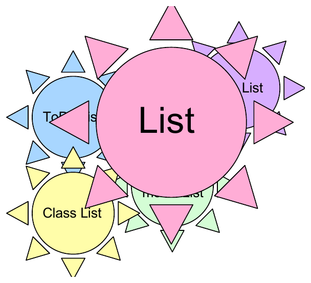

The List ADT
Announcements
Where we’re going
insert at position \(k\), with and without a sentinelremoveCurrent, twice
template<class LIT>
class List {
public:
List() : size(0), head(nullptr);
~List(); // + op= and cctor
int getSize() const;
void insert(int loc, LIT e);
void remove(int loc);
LIT const & getItem(int loc) const;
private:
struct Node {
LIT data;
Node * next;
Node(LIT newData) : data(newData), next(nullptr) { }
};
Node * head;
int size;
};Analysis: aside: insert new \(k\)th in an array:
Wow, this is convenient! How do we make it happen?
Given a pointer to the node you wish to remove.
Solution #1:
Analysis:
Constant time hack:
CPSC 221